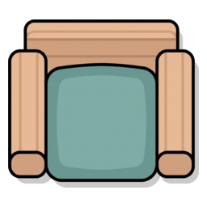

—
—
Zona Matí
Zona Tarda
Objecte (no ocupable)

Objecte ocupableILS candidates

Objecte ocupableEts qui confecciona l'horari dels intèrprets de llengua de signes (ILS) als centres educatius. Has de col·locar cada ILS al seu lloc respectant totes les pistes.
Regles del tauler
Objectiu final: hi ha una ILS de més (N places i N+1 candidates). Quan quadris l'horari, descobriràs qui es queda sense plaça.
Qui queda fora també té pista. Com que no ocupa cap casella, sempre és una negació («no seia mai en cap cadira»): mira si pot ocupar l'última plaça lliure. La forma de la targeta no et dirà mai qui és.
Controls
En paper: el botó 🖨️ Plantilles obre un full A4 per imprimir (enunciat, glossari i solució).
Vocabulari d'objectes i símbols que et trobaràs al tauler.